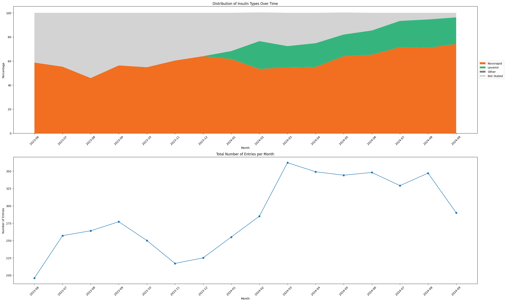
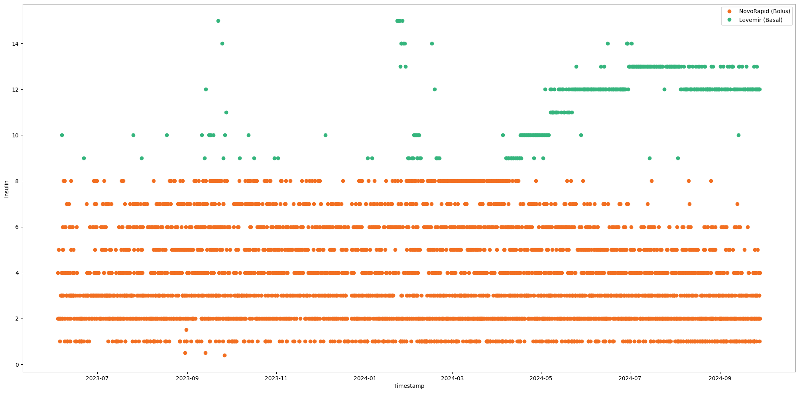
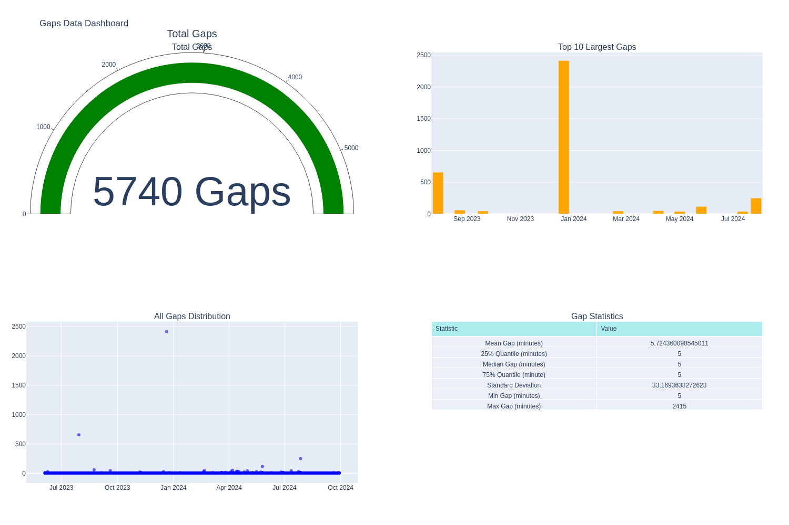

xDrip+ Data Analysis for Gastroparesis Screening (XGastro-EDA)#
Introduction#
This notebook demonstrates the processing and analysis of Continuous Glucose Monitoring (CGM) data from xDrip+ for potential gastroparesis screening applications. By carefully processing CGM data alongside meal and insulin records, we create a foundation for analyzing post-meal glucose response patterns.
Project Context#
Gastroparesis, a condition affecting gastric emptying, can be challenging to diagnose. Traditional screening methods often require specialized testing. This project explores the potential of using readily available CGM data to identify patterns that might indicate delayed gastric emptying.
Data Source#
xDrip+: An open-source diabetes management application
Time Period: June 2023 - September 2024
Key Components:
CGM readings at 5-minute intervals
Meal records with carbohydrate quantities
Insulin dosing (basal and bolus)
Project Objectives#
Data Integration
Align CGM, meal, and insulin data to common timeline
Ensure data quality and completeness
Create robust meal analysis framework
Quality Assurance
Identify and characterize data gaps
Implement appropriate interpolation strategies
Maintain data integrity for clinical analysis
Analysis Preparation
Focus on significant meals (>20g carbs)
Create 4-hour post-meal analysis windows
Develop quality metrics for meal data assessment
Notebook Structure#
Data extraction and cleaning
Timeline alignment and gap analysis
Meal period identification and classification
Quality assessment and interpolation
Statistical validation
Preparation for further analysis
This notebook focuses on data preparation and quality assessment, laying the groundwork for subsequent analysis of post-meal glucose patterns.
Required Libraries and Dependencies#
This notebook uses several Python libraries for data manipulation, analysis, and visualization:
pandas: Core data manipulation and analysis
numpy: Numerical operations and array handling (imported in respective module)
matplotlib: Data visualization and plotting
sqlalchemy: Database connectivity and operations
ast: Safe parsing of JSON-like strings (imported in respective module)
enum, dataclass, typing: Type hinting and structured data classes (imported in respective module)
display: Improved print options in Jupyter
pprint: Improved print layout of nested data structures
Note: This project assumes you have these libraries installed. If needed, install via pip:
pip install pandas numpy matplotlib sqlalchemy
import pandas as pd
import numpy as np
import matplotlib.pyplot as plt
from IPython.display import display, HTML, Image
display(HTML("<style>.container { width:95% !important; }</style>")) # Make Jupyter cells wider for better visuals
import pprint
Import our created functions#
We have chosen to keep the main code functionality seperate from this notebook for a couple of reasons, one being they keep our functionality modular, this is an advantage for multiple reasons including future use in other proejcts with minimal modifications. Other reasons being to keep the length of the notebook down and visually appealing as possible. This method will also allow for the repo to be cloned and used within your own projects, creating a tool for importing cleaning and using with your own data, in your own specific way and allowing for future expansion for other CGM device and data formats.
If you have an interest, all our python code can be found in our src directory, and we have implemented this jupyter book with hover tooltip functionality, this will show the linked python code for each function as the are being used by simply hovering over the link in the markdown cell prior to the function use. the functions will be shown in links using this format: Here’s a function from
# Path modification used to allow Notebook access to src directory
import os
import sys
notebook_path = os.path.abspath('.')
project_root = os.path.join(notebook_path, '../../')
if project_root not in sys.path:
sys.path.append(project_root)
# Preprocessing Module - Load, clean and align data
from src.preprocessing.loading import XDrip
from src.preprocessing.cleaning import clean_classify_insulin, clean_classify_carbs, clean_glucose
from src.preprocessing.alignment import align_diabetes_data
# Analysis Module - Check and display data quality
from src.analysis.config import MealQuality, MealAnalysisConfig
from src.analysis.gaps import analyse_glucose_gaps
from src.analysis.insulin import analyse_insulin_over_time
from src.analysis.meals import analyse_meal_data, get_meal_statistics
from src.analysis.metrics import display_quality_metrics
# Visualisation Module - Format data for visual appeal in Jupyter
from src.visualisation.quality_dashboard import create_quality_dashboard
from src.visualisation.meal_statistics_dashboard import create_meal_statistics_dashboard
from src.visualisation.gap_dashboard import create_gap_dashboard
Data Source: xDrip+ SQLite Database#
This notebook begins by connecting to an xDrip+ SQLite database export. xDrip+ is an open-source diabetes management application that stores various diabetes-related data including glucose readings, treatments, and device status information.
Database Connection#
We establish a connection to the SQLite database and inspect its structure. The database contains 29 tables storing different aspects of diabetes management data:
Key tables for our analysis:
BgReadings: Continuous glucose monitoring (CGM) data
Treatments: Insulin doses and carbohydrate intake records
Calibration: Sensor calibration events
Sensors: CGM sensor information
# Path to your SQLite file
db_path = '../../data/export20240928-130349.sqlite'
data = XDrip(db_path) # Load db path into XDrip class - Class found in src directory
tables = data.get_table_names() # PPrint all table names in sqlite file - Function found in src directory
['APStatus',
'Accuracy',
'ActiveBgAlert',
'ActiveBluetoothDevice',
'AlertType',
'BgReadings',
'BgSendQueue',
'BloodTest',
'Calibration',
'CalibrationRequest',
'CalibrationSendQueue',
'DesertSync',
'HeartRate',
'Libre2RawValue2',
'Libre2Sensors',
'LibreBlock',
'LibreData',
'Notifications',
'PebbleMovement',
'PenData',
'Prediction',
'Reminder',
'SensorSendQueue',
'Sensors',
'TransmitterData',
'Treatments',
'UploaderQueue',
'UserErrors',
'android_metadata']
Loading and Initial Data Processing#
We extract three key datasets from the xDrip+ database and prepare them for analysis by:
Converting Unix timestamps to pandas datetime format
Setting timestamps as index for time-series analysis
Creating separate dataframes initially for:
Blood glucose readings
Treatment records (insulin & carbohydrates)
Data Loading Process#
Each table requires the same preprocessing steps:
SQL to pandas DataFrame conversion
Timestamp conversion from milliseconds
Index creation from timestamp
You can check out the full implementation in the src directory. Let’s examine the structure of our blood glucose data:
load_glucose_df()
load_treatment_df()
bg_df = data.load_glucose_df() # Load glucose data into a pandas dataframes and set timestamp as index - Function found in src directory
treatment_df = data.load_treatment_df() # Load glucose data into a pandas dataframes and set timestamp as index - Function found in src directory
# Explore the first few rows of the blood glucose table
bg_df.head()
| _id | a | age_adjusted_raw_value | b | c | calculated_value | calculated_value_slope | calibration | calibration_flag | calibration_uuid | ... | ra | raw_calculated | raw_data | rb | rc | sensor | sensor_uuid | source_info | time_since_sensor_started | uuid | |
|---|---|---|---|---|---|---|---|---|---|---|---|---|---|---|---|---|---|---|---|---|---|
| timestamp | |||||||||||||||||||||
| 2023-06-03 22:31:05.757 | 72464 | 1.245412e-13 | 190.235280 | -0.419946 | 3.540085e+11 | 133.923468 | -0.000035 | 559.0 | 0 | cba43ee7-5a7c-47e7-beb5-a5d7c211e64b | ... | 1.620198e-13 | 0.0 | 190.235280 | -0.546322 | 4.605416e+11 | 42 | 73b87f32-2b6b-47c9-b2bc-9283632d169a | None | 1.211123e+09 | a63f2267-5f99-4663-8714-7146835e118c |
| 2023-06-03 22:36:06.812 | 72465 | 7.766019e-12 | 178.352928 | -26.184433 | 2.207130e+13 | 124.789758 | -0.000030 | 559.0 | 0 | cba43ee7-5a7c-47e7-beb5-a5d7c211e64b | ... | 1.010308e-11 | 0.0 | 178.352928 | -34.064212 | 2.871330e+13 | 42 | 73b87f32-2b6b-47c9-b2bc-9283632d169a | None | 1.211424e+09 | d1386140-bdfe-4bd3-802e-9b406cf320c2 |
| 2023-06-03 22:41:09.457 | 72466 | 2.847681e-11 | 173.176458 | -96.014259 | 8.093196e+13 | 120.810715 | -0.000013 | 559.0 | 0 | cba43ee7-5a7c-47e7-beb5-a5d7c211e64b | ... | 3.704645e-11 | 0.0 | 173.176458 | -124.908189 | 1.052871e+14 | 42 | 73b87f32-2b6b-47c9-b2bc-9283632d169a | None | 1.211727e+09 | 1f24e9fc-b7f5-4ae9-a5ca-2ba50b8d3e09 |
| 2023-06-03 22:50:16.249 | 72467 | -1.041753e-11 | 157.529400 | 35.124388 | -2.960690e+13 | 108.783156 | -0.000022 | 559.0 | 0 | cba43ee7-5a7c-47e7-beb5-a5d7c211e64b | ... | -1.355251e-11 | 0.0 | 157.529400 | 45.694502 | -3.851661e+13 | 42 | 73b87f32-2b6b-47c9-b2bc-9283632d169a | None | 1.212273e+09 | b6395bd2-e2fb-4471-845a-ad2f2efb5e66 |
| 2023-06-03 22:55:15.702 | 72468 | -3.626429e-12 | 147.764695 | 12.227082 | -1.030639e+13 | 101.277236 | -0.000025 | 559.0 | 0 | cba43ee7-5a7c-47e7-beb5-a5d7c211e64b | ... | -4.717744e-12 | 0.0 | 147.764695 | 15.906624 | -1.340793e+13 | 42 | 73b87f32-2b6b-47c9-b2bc-9283632d169a | None | 1.212573e+09 | 3cdb52ca-e4e3-43d0-8274-f16c70c24513 |
5 rows × 28 columns
Treatment Data Preprocessing: Insulin Classification#
This function implements a sophisticated insulin classification algorithm for diabetes treatment data. The classification process handles both labeled and unlabeled insulin entries, using a combination of explicit insulin types and quantity-based rules.
Classification Rules#
Labeled Insulin
Novorapid → Bolus insulin
Levemir → Basal insulin
Unlabeled Insulin
≤ 8 units → Classified as Bolus
8-15 units → Classified as Basal
15 units → Dropped (likely data entry errors)
Function Process#
Creates separate columns for bolus and basal insulin
Processes JSON metadata for labeled entries
Applies rule-based classification for unlabeled entries
Maintains data integrity by dropping suspicious entries
insulin_df = clean_classify_insulin(treatment_df) # Function in source directory
Analysing Insulin Usage Patterns Over Time#
This analysis examines the temporal patterns in insulin usage, providing insights into treatment consistency and data quality. The function performs both data analysis and visualization, helping identify trends and potential data collection issues.
Analysis Components#
Temporal Aggregation
Groups data by month
Processes JSON metadata for insulin types
Calculates usage percentages for different insulin types
Insulin Classification
Novorapid (rapid-acting insulin)
Levemir (long-acting insulin)
Other insulin types
Unspecified entries
Visualisation#
The function generates two complementary plots:
Stacked Area Chart
Shows relative distribution of insulin types
Uses consistent color coding (Orange: Novorapid, Green: Levemir)
Reveals changes in recording practices
Entry Count Timeline
Displays total monthly entries
Helps identify data collection gaps or inconsistencies
plot, insulin_counts = analyse_insulin_over_time(insulin_df) # Function in source directory
plot.show()

Data Validation: Raw Insulin Distribution#
Before proceeding with our cleaned and classified insulin data, we visualize the raw insulin entries to:
Verify the range of insulin values
Identify potential outliers
Check temporal distribution of entries
Validate our classification thresholds (8u for bolus, 15u for basal)
The scatter plot provides a quick visual validation that our insulin classification function’s assumptions align with the actual data patterns.
# Make plot 25 x 12
plt.figure(figsize=(25, 12))
plt.plot(insulin_df['insulin'], label='Insulin', marker='o', linestyle = 'None', color='#F26F21')
# Add labels, title, and legend
plt.xlabel('Timestamp')
plt.ylabel('Insulin')
plt.legend()
plt.show()
# Make plot 25 x 12
plt.figure(figsize=(25, 12))
# Create masks for NovoRapid (bolus) and Levemir (basal)
bolus_mask = insulin_df['bolus'] >0.0
basal_mask = insulin_df['basal']> 0.0
# Plot bolus (NovoRapid) points
plt.plot(
np.array(insulin_df[bolus_mask].index), # Convert index to NumPy array
np.array(insulin_df[bolus_mask]['insulin']), # Convert insulin values to NumPy array
label='NovoRapid (Bolus)',
marker='o',
linestyle='None', # No line connecting points
color='#F26F21' # NovoRapid orange
)
# Plot basal (Levemir) points
plt.plot(
np.array(insulin_df[basal_mask].index), # Convert index to NumPy array
np.array(insulin_df[basal_mask]['insulin']), # Convert insulin values to NumPy array
label='Levemir (Basal)',
marker='o',
linestyle='None', # No line connecting points
color='#35b57d' # Levemir green
)
# Add labels, title, and legend
plt.xlabel('Timestamp')
plt.ylabel('Insulin')
plt.legend()
plt.show()

Refined Insulin Dataset Structure#
After cleaning and classification, we isolate our two key insulin variables (bolus and basal) and examine the resulting dataset structure. This inspection helps:
Verify Data Processing
Confirm successful separation of insulin types
Check data types and memory usage
Review null values if any
Statistical Overview
Distribution of both insulin types
Typical dosing ranges
Identify any remaining outliers
The .info() shows our dataframe structure while .describe() provides key statistical measures.
insulin_df = insulin_df[['bolus', 'basal']]
insulin_df.info()
<class 'pandas.core.frame.DataFrame'>
DatetimeIndex: 4595 entries, 2023-06-03 23:58:08.909000 to 2024-09-28 09:44:00.948000
Data columns (total 2 columns):
# Column Non-Null Count Dtype
--- ------ -------------- -----
0 bolus 4595 non-null float64
1 basal 4595 non-null float64
dtypes: float64(2)
memory usage: 236.7 KB
insulin_df.describe()
| bolus | basal | |
|---|---|---|
| count | 4595.000000 | 4595.000000 |
| mean | 3.213036 | 1.182372 |
| std | 2.170215 | 3.551143 |
| min | 0.000000 | 0.000000 |
| 25% | 2.000000 | 0.000000 |
| 50% | 3.000000 | 0.000000 |
| 75% | 5.000000 | 0.000000 |
| max | 8.000000 | 15.000000 |
Carbohydrate Data Preprocessing#
A straightforward but essential cleaning step for carbohydrate data. This function:
Creates a safe copy of the original data
Removes trivial carbohydrate entries (<1g)
Maintains original timestamp indexing
Rationale#
Entries below 1g are likely recording errors or insignificant for meal analysis
Clean dataset focuses on meaningful carbohydrate intake events
Preserves original data structure for later meal impact analysis
carb_df = clean_classify_carbs(treatment_df) # Function in source directory
Refined Carbohydrate Dataset Structure#
After cleaning our carbohydrates dataset, we simply wish to keep the index and carbs column.
# Drop all columns except carbohydrate
carb_df = carb_df[['carbs']]
carb_df
| carbs | |
|---|---|
| timestamp | |
| 2023-06-04 15:07:19.574 | 15.0 |
| 2023-06-05 08:38:31.044 | 11.5 |
| 2023-06-05 19:47:28.229 | 10.0 |
| 2023-06-05 20:11:25.671 | 2.0 |
| 2023-06-06 09:23:28.065 | 13.0 |
| ... | ... |
| 2024-09-27 19:35:57.790 | 20.0 |
| 2024-09-27 20:09:48.635 | 25.0 |
| 2024-09-28 02:00:14.692 | 16.0 |
| 2024-09-28 05:31:45.364 | 3.0 |
| 2024-09-28 10:16:10.065 | 45.0 |
3507 rows × 1 columns
Visual Validation: Carbohydrate Distribution#
Following our carbohydrate data cleaning, we visualize the temporal distribution and magnitude of carbohydrate entries to:
Confirm removal of sub-1g entries
Examine the range of carbohydrate values
Check recording frequency and patterns
Identify any potential outliers requiring attention
The scatter plot representation helps validate our minimal cleaning approach and provides insight into meal recording patterns.
# Make plot 25 x 12
plt.figure(figsize=(25, 12))
plt.plot(carb_df['carbs'], label='Carbohydrates', marker='o', linestyle = 'None')
# Add labels, title, and legend
plt.xlabel('Timestamp')
plt.ylabel('Carbohydrates')
plt.legend()
plt.show()
Carbohydrate Dataset Summary#
After basic cleaning, we examine the carbohydrate dataset structure and statistics to:
Verify Dataset Properties
Confirm single carbohydrate column retention
Check data type consistency
Review number of recorded meals
Statistical Distribution
Typical meal carbohydrate content
Range of carbohydrate values
Help validate typical meal size assumptions
The .info() provides structure verification while .describe() shows the statistical distribution of meal carbohydrates.
carb_df.info()
<class 'pandas.core.frame.DataFrame'>
DatetimeIndex: 3507 entries, 2023-06-04 15:07:19.574000 to 2024-09-28 10:16:10.065000
Data columns (total 1 columns):
# Column Non-Null Count Dtype
--- ------ -------------- -----
0 carbs 3507 non-null float64
dtypes: float64(1)
memory usage: 54.8 KB
carb_df.describe()
| carbs | |
|---|---|
| count | 3507.000000 |
| mean | 26.377887 |
| std | 20.254482 |
| min | 1.000000 |
| 25% | 10.000000 |
| 50% | 20.000000 |
| 75% | 40.000000 |
| max | 120.000000 |
Blood Glucose Data Preprocessing#
This cleaning function prepares blood glucose data for analysis by implementing essential clinical and analytical standards:
Cleaning Steps#
Unit Standardization
Renames ‘calculated_value’ to ‘mg_dl’ for clarity
Creates ‘mmol_l’ column (standard international units)
Conversion factor: mg/dL × 0.0555 = mmol/L
Clinical Range Enforcement
Lower bound: 39.64 mg/dL (2.2 mmol/L)
Upper bound: 360.36 mg/dL (20.0 mmol/L)
Values outside range clipped to these limits
Data Simplification
Retains only essential columns
Preserves timestamp index
Maintains dual unit representation
Rationale#
Range limits reflect typical CGM sensor capabilities
Dual units support international analysis
Simplified structure focuses on key metrics
glucose_df = clean_glucose(bg_df) # Function in source directory
Blood Glucose Data Visualization#
We examine the glucose data through two complementary visualizations to validate our cleaning process and understand data patterns:
Full Dataset Scatter Plot#
Shows complete temporal distribution
Validates clipping of extreme values
Reveals overall data density
Highlights any major gaps
Recent 90-Day Time Series#
Focused view of latest 90 days (25,920 points at 5-min intervals)
Connected line plot shows glucose trends
More detailed examination of recent monitoring
Better visualization of daily patterns
Recent 48-Hour Time Series#
Focused view of latest 48 Hours (576 points at 5-min intervals)
Connected line plot shows glucose trends
More detailed examination of recent monitoring
Better visualization of daily patterns The contrast between these views helps validate both long-term data collection and recent monitoring quality.
# Make plot 25 x 12
plt.figure(figsize=(25, 12))
plt.plot(glucose_df['mmol_l'], label='mmol/L', marker='o', linestyle = 'None')
# Add labels, title, and legend
plt.xlabel('Timestamp')
plt.ylabel('Blood Glucose (mmol/L)')
plt.legend()
plt.show()
# Display most recent 90 days of glucose readings in mmol/L
last_90 = glucose_df[-25920:]
# Make plot 25 x 12
plt.figure(figsize=(25, 12))
plt.plot(last_90['mmol_l'], label='mmol/L')
# Add labels, title, and legend
plt.title('Glucose readings in mmol/L - Most recent 90 Days')
plt.xlabel('Timestamp')
plt.ylabel('Blood Glucose (mmol/L)')
plt.legend()
plt.show()
# Display most recent 48 Hours of glucose readings in mmol/L
last_48h = glucose_df[-576:]
# Make plot 25 x 12
plt.figure(figsize=(25, 12))
plt.plot(last_48h['mmol_l'], label='mmol/L')
# Add labels, title, and legend
plt.title('Glucose readings in mmol/L - Most recent 48 Hours')
plt.xlabel('Timestamp')
plt.ylabel('Blood Glucose (mmol/L)')
plt.legend()
plt.show()
We can see that the last 48 hour graph shows messy lines especially around 3 am, this could be due to incosistent gap sizes causing the lines to dilate and contract depending on the size of the gap. We will visualise this again after aligning our datasets to regular 5-minute intervals.
glucose_df.info()
<class 'pandas.core.frame.DataFrame'>
DatetimeIndex: 132658 entries, 2023-06-03 22:31:05.757000 to 2024-09-28 12:00:32.280000
Data columns (total 2 columns):
# Column Non-Null Count Dtype
--- ------ -------------- -----
0 mg_dl 132658 non-null float64
1 mmol_l 132658 non-null float64
dtypes: float64(2)
memory usage: 7.1 MB
glucose_df.describe()
| mg_dl | mmol_l | |
|---|---|---|
| count | 132658.000000 | 132658.000000 |
| mean | 118.803722 | 6.593607 |
| std | 53.421262 | 2.964880 |
| min | 39.640000 | 2.200020 |
| 25% | 81.721612 | 4.535549 |
| 50% | 110.186123 | 6.115330 |
| 75% | 144.372009 | 8.012646 |
| max | 360.360000 | 19.999980 |
Dataset Overview: Final Check#
Before proceeding with dataset alignment, we perform a final verification of our three core datasets. This check ensures:
Data Dimensions
Number of records in each dataset
Column confirmations
Memory usage
Time Range Verification
All datasets properly indexed by timestamp
Presence of complete data columns
No unexpected alterations from cleaning
Data Completeness
Blood glucose monitoring frequency
Meal (carbohydrate) records
Insulin treatment entries
glucose_df.info()
<class 'pandas.core.frame.DataFrame'>
DatetimeIndex: 132658 entries, 2023-06-03 22:31:05.757000 to 2024-09-28 12:00:32.280000
Data columns (total 2 columns):
# Column Non-Null Count Dtype
--- ------ -------------- -----
0 mg_dl 132658 non-null float64
1 mmol_l 132658 non-null float64
dtypes: float64(2)
memory usage: 7.1 MB
carb_df.info()
<class 'pandas.core.frame.DataFrame'>
DatetimeIndex: 3507 entries, 2023-06-04 15:07:19.574000 to 2024-09-28 10:16:10.065000
Data columns (total 1 columns):
# Column Non-Null Count Dtype
--- ------ -------------- -----
0 carbs 3507 non-null float64
dtypes: float64(1)
memory usage: 54.8 KB
insulin_df.info()
<class 'pandas.core.frame.DataFrame'>
DatetimeIndex: 4595 entries, 2023-06-03 23:58:08.909000 to 2024-09-28 09:44:00.948000
Data columns (total 2 columns):
# Column Non-Null Count Dtype
--- ------ -------------- -----
0 bolus 4595 non-null float64
1 basal 4595 non-null float64
dtypes: float64(2)
memory usage: 236.7 KB
Data Alignment and Synthesis#
After cleaning individual datasets, we now combine them into a unified timeframe with consistent 5-minute intervals. This critical step creates our foundation for meal impact analysis.
Alignment Process#
Timestamp Standardization
Rounds all timestamps to nearest 5-minute mark
Creates uniform timeline across all data types
Spans from earliest to latest record
Data Integration
Blood Glucose: Averaged within intervals
Carbohydrates: Summed within intervals
Insulin: Bolus and basal summed separately
Quality Assurance
Shape verification
Column completeness
Statistical distribution check
The resulting dataset provides:
Complete timeline with no gaps
Aligned treatment and response data
Missing value handling appropriate to data type
Glucose: NaN preserved
Treatments: 0 for missing values
combined_df = align_diabetes_data(glucose_df, carb_df, insulin_df) # Function in source directory
combined_df.shape
(138979, 5)
combined_df.info()
<class 'pandas.core.frame.DataFrame'>
DatetimeIndex: 138979 entries, 2023-06-03 22:30:00 to 2024-09-28 12:00:00
Freq: 5min
Data columns (total 5 columns):
# Column Non-Null Count Dtype
--- ------ -------------- -----
0 mg_dl 132404 non-null float64
1 mmol_l 132404 non-null float64
2 carbs 138979 non-null float64
3 bolus 138979 non-null float64
4 basal 138979 non-null float64
dtypes: float64(5)
memory usage: 6.4 MB
combined_df.describe()
| mg_dl | mmol_l | carbs | bolus | basal | |
|---|---|---|---|---|---|
| count | 132404.000000 | 132404.000000 | 138979.000000 | 138979.000000 | 138979.000000 |
| mean | 118.818741 | 6.594440 | 0.665620 | 0.106231 | 0.039092 |
| std | 53.428713 | 2.965294 | 5.257466 | 0.710322 | 0.679371 |
| min | 39.640000 | 2.200020 | 0.000000 | 0.000000 | 0.000000 |
| 25% | 81.736647 | 4.536384 | 0.000000 | 0.000000 | 0.000000 |
| 50% | 110.189776 | 6.115533 | 0.000000 | 0.000000 | 0.000000 |
| 75% | 144.369838 | 8.012526 | 0.000000 | 0.000000 | 0.000000 |
| max | 360.360000 | 19.999980 | 140.000000 | 16.000000 | 15.000000 |
Glucose Data Gap Analysis#
After alignment, we analyze the continuity of glucose monitoring data to identify and characterize monitoring gaps. This analysis is crucial for:
Gap Detection Process#
Identification
Finds sequences of missing glucose values
Records start and end times
Calculates gap durations
Classification
Stores gap information in structured format
Identifies longest gaps
Creates human-readable duration format
Meal Impact Analysis
Checks for meals preceding gaps
Flags gaps that might affect meal analysis
4-hour pre-gap meal window check
Key Outputs#
Top N largest gaps with detailed timing
Total number of gaps
Complete gap inventory
Meal proximity warnings
analyse_glucose_gaps()
create_gap_dashboard()
gap_analysis = analyse_glucose_gaps(combined_df) # Function in source directory
# Create and display data quality display dashboard
path = 'img/gap_dashboard.png'
fig = create_gap_dashboard(gap_analysis, save_path=path) # Function in source directory
Gaps Dashboard saved.
pprint.pp(gap_analysis)
{'total_gaps': 5743,
'largest_gaps': start_time end_time length_minutes duration
1973 2023-12-20 14:50:00 2023-12-22 07:05:00 2415.0 40h 15m
506 2023-07-29 17:50:00 2023-07-30 04:45:00 655.0 10h 55m
4725 2024-07-27 06:15:00 2024-07-27 10:25:00 250.0 4h 10m
3855 2024-05-25 13:40:00 2024-05-25 15:35:00 115.0 1h 55m
723 2023-08-23 16:35:00 2023-08-23 17:35:00 60.0 1h 0m
3303 2024-04-06 15:25:00 2024-04-06 16:15:00 50.0 0h 50m
1037 2023-09-19 06:35:00 2023-09-19 07:20:00 45.0 0h 45m
2795 2024-02-20 15:25:00 2024-02-20 16:10:00 45.0 0h 45m
4523 2024-07-12 00:45:00 2024-07-12 01:25:00 40.0 0h 40m
3591 2024-05-01 01:55:00 2024-05-01 02:35:00 40.0 0h 40m,
'gaps_df': start_time end_time length_minutes
0 2023-06-03 22:45:00 2023-06-03 22:50:00 5.0
1 2023-06-04 04:50:00 2023-06-04 04:55:00 5.0
2 2023-06-04 05:40:00 2023-06-04 05:45:00 5.0
3 2023-06-04 07:40:00 2023-06-04 07:45:00 5.0
4 2023-06-04 08:50:00 2023-06-04 08:55:00 5.0
... ... ... ...
5738 2024-09-28 09:35:00 2024-09-28 09:40:00 5.0
5739 2024-09-28 09:55:00 2024-09-28 10:00:00 5.0
5740 2024-09-28 10:25:00 2024-09-28 10:30:00 5.0
5741 2024-09-28 10:50:00 2024-09-28 10:55:00 5.0
5742 2024-09-28 11:40:00 2024-09-28 11:45:00 5.0
[5743 rows x 3 columns]}
# Display created dashboard
display(Image(filename=path))

Glucose Monitoring Gap Analysis Results#
Overview of Data Gaps#
Our analysis identified 5,743 total gaps in glucose monitoring, with durations ranging from 5 minutes to over 40 hours. This comprehensive gap analysis reveals several key patterns:
Gap Distribution#
Major Gaps (>4 hours):
One exceptional gap of 40h 15m (Dec 20-22, 2023)
One significant gap of 10h 55m (July 29-30, 2023)
One moderate gap of 4h 10m (July 27, 2024)
Medium Gaps (1-4 hours):
Only two gaps in this range
Maximum of 1h 55m (May 25, 2024)
Minimum of 1h (Aug 23, 2023)
Minor Gaps (<1 hour):
Most common duration: 5 minutes
Several gaps between 40-50 minutes
Generally well-distributed across the monitoring period
Critical Observations#
Meal Impact
5 of the top 10 gaps have meals in the preceding 4 hours
Most concerning for the 4h+ gaps affecting post-meal analysis
Data Quality
Majority of gaps (>5,000) are brief 5-minute interruptions
Only 3 gaps exceed typical meal analysis window (4 hours)
Overall excellent data continuity with few significant interruptions
Monitoring Patterns
No seasonal pattern in major gaps
Even distribution of minor gaps suggests routine sensor changes
Good recovery after interruptions
This analysis supports our decision to proceed with meal impact analysis, as the vast majority of gaps are brief and manageable with our chosen interpolation approach.
Meal Analysis Configuration and Quality Assessment#
Data Quality Framework#
We implement a structured approach for assessing meal data quality and handling glucose data gaps, with clear classification criteria and configurable parameters.
Quality Categories#
Clean Meals
Perfect data quality
No gaps in glucose readings
Ideal for analysis
Usable Meals
Small gaps (≤15 minutes)
Missing data ≤10%
Suitable for analysis after interpolation
Borderline Meals
Medium gaps (≤25 minutes)
Missing data ≤20%
Use with caution
Unusable Meals
Large gaps (>25 minutes)
Missing data >20%
Exclude from analysis
Configuration Parameters#
Minimum meal size: 20g carbohydrates
Post-meal analysis window: 4 hours
Maximum interpolation: 5 consecutive readings (25 minutes)
Clear thresholds for gap classification
Configurable quality criteria
Processing Workflow#
Gap Analysis
Identifies missing data patterns
Calculates gap durations
Determines data completeness
Quality Assessment
Evaluates each meal period
Assigns quality categories
Marks meals for inclusion/exclusion
Data Enhancement
Interpolates acceptable gaps
Marks interpolated values
Preserves data integrity
Meal Quality Statistics Generation#
This function computes comprehensive statistics about our meal dataset quality, providing key metrics for assessing data reliability and processing effectiveness.
Generated Statistics#
The function calculates essential metrics across several dimensions:
Volume Metrics
Total number of meals (>20g carbs)
Counts per quality category
Percentage distribution across categories
Quality Indicators
Average percentage of missing data
Average gap duration
Proportion of usable meals
Number and percentage of interpolated points
Statistical Output Format#
Returns a dictionary containing:
Raw counts and percentages
Data completeness metrics
Interpolation impact measures
All metrics aligned with MealAnalysisConfig parameters
Meal Quality Dashboard Generation#
analyse_meal_data()
get_meal_statistics()
create_meal_statistics_dashboard()
analysed_df = analyse_meal_data(combined_df) # Run meal quality analysis - Function in src directory
stats = get_meal_statistics(analysed_df) # Create analysis statistics - Function in src directory
# Create and display data quality display dashboard
path = 'img/meal_statistics_dashboard.png'
fig = create_meal_statistics_dashboard(stats, save_path=path) # Create meal statistics dashboard - Function in src directory
pprint.pp(stats)
Meal Statistics Dashboard saved.
{'total_meals': 1628,
'quality_counts': {'Usable': 1309,
'Clean': 170,
'Borderline': 137,
'Unusable': 12},
'quality_percentages': {'Usable': 80.4054054054054,
'Clean': 10.442260442260443,
'Borderline': 8.415233415233416,
'Unusable': 0.7371007371007371},
'avg_missing_pct': np.float64(4.550468836183122),
'avg_gap_duration': np.float64(4.895577395577396),
'usable_meals_pct': 99.26289926289927,
'interpolated_points': np.int64(1808),
'interpolated_pct': np.float64(1.3009159657214397)}
# Display created dashboard
display(Image(filename=path))
Meal Analysis Results Summary#
Dataset Overview#
Analysis of 1,628 meals (>20g carbs) reveals excellent data quality with high usability for gastroparesis screening:
Quality Distribution#
Clean Meals: 170 (10.44%)
Perfect data quality
No interpolation needed
Usable Meals: 1,309 (80.41%)
Primary analysis dataset
Minor gaps successfully interpolated
Borderline Meals: 137 (8.42%)
Usable with caution
Higher but acceptable gap rates
Unusable Meals: 12 (0.74%)
Excluded from analysis
Excessive missing data
Data Quality Metrics#
Gap Characteristics
Average gap duration: 4.90 minutes
Average missing data: 4.55%
Both well within acceptable limits
Interpolation Impact
1,808 points interpolated
Only 1.30% of total readings
Minimal data manipulation required
Overall Usability
99.26% of meals usable for analysis
Strong foundation for gastroparesis screening
High confidence in data integrity
These results indicate exceptional data quality with minimal need for interpolation, providing a robust dataset for subsequent analysis.
Dataset Structure and Statistical Summary#
Dataset Properties Analysis#
After meal quality analysis and interpolation, let’s examine our complete dataset structure and statistical distribution.
Data Structure#
Let’s examine:
Total records and memory usage
Column data types
Non-null counts
Index structure and timeline coverage
Statistical Distribution#
The describe() output provides key statistics for each column:
Central tendency (mean, std)
Range and quartiles
Treatment frequency and size
Glucose value distribution
This verification ensures our processing maintained data integrity while improving usability.
analysed_df.info()
<class 'pandas.core.frame.DataFrame'>
DatetimeIndex: 138979 entries, 2023-06-03 22:30:00 to 2024-09-28 12:00:00
Freq: 5min
Data columns (total 11 columns):
# Column Non-Null Count Dtype
--- ------ -------------- -----
0 mg_dl 134925 non-null float64
1 mmol_l 134925 non-null float64
2 carbs 138979 non-null float64
3 bolus 138979 non-null float64
4 basal 138979 non-null float64
5 has_missing_data 138979 non-null bool
6 gap_duration_mins 138979 non-null float64
7 missing_pct 138979 non-null float64
8 meal_quality 1628 non-null object
9 skip_meal 138979 non-null bool
10 interpolated 138979 non-null bool
dtypes: bool(3), float64(7), object(1)
memory usage: 14.0+ MB
analysed_df.describe()
| mg_dl | mmol_l | carbs | bolus | basal | gap_duration_mins | missing_pct | |
|---|---|---|---|---|---|---|---|
| count | 134925.000000 | 134925.000000 | 138979.000000 | 138979.000000 | 138979.000000 | 138979.000000 | 138979.000000 |
| mean | 118.761766 | 6.591278 | 0.665620 | 0.106231 | 0.039092 | 0.057347 | 0.053304 |
| std | 53.405889 | 2.964027 | 5.257466 | 0.710322 | 0.679371 | 0.808486 | 0.683813 |
| min | 39.640000 | 2.200020 | 0.000000 | 0.000000 | 0.000000 | 0.000000 | 0.000000 |
| 25% | 81.687730 | 4.533669 | 0.000000 | 0.000000 | 0.000000 | 0.000000 | 0.000000 |
| 50% | 110.187646 | 6.115414 | 0.000000 | 0.000000 | 0.000000 | 0.000000 | 0.000000 |
| 75% | 144.341367 | 8.010946 | 0.000000 | 0.000000 | 0.000000 | 0.000000 | 0.000000 |
| max | 360.360000 | 19.999980 | 140.000000 | 16.000000 | 15.000000 | 125.000000 | 73.469388 |
Diabetes Data Processing and Meal Analysis Summary#
Initial Data Processing#
We started with three separate dataframes extracted from xDrip+ CGM management software:
Blood glucose readings (mg/dl and mmol/l) at approximately 5-minute intervals
Carbohydrate intake records
Insulin (bolus and basal) records processed from treatment logs
Data Alignment and Quality Analysis#
Aligned all data to regular 5-minute intervals
Created a meal analysis framework with configurable parameters:
4-hour post-meal analysis windows
Minimum 20g carbs to consider as significant meal
Maximum gap tolerance of 25 minutes
Maximum 20% missing data allowed
Interpolation limit of 25 minutes (5 readings)
Quality Metrics and Results#
Our analysis of 1,628 significant meals (>20g carbs) shows:
170 Clean meals (10.44%): Perfect data, no gaps
1,309 Usable meals (80.41%): Small gaps only, ≤10% missing
137 Borderline meals (8.42%): Medium gaps, ≤20% missing
Only 12 Unusable meals (0.74%): Large gaps or excessive missing data
The data quality is excellent:
99.26% of meals are usable for analysis
Average missing data is only 4.55%
Average gap duration is 4.90 minutes
Only 1.30% of points needed interpolation (1,808 points)
New Dataset Features#
The processed dataframe includes additional columns crucial for gastroparesis screening:
has_missing_data: Flags any missing BG in 4h post-meal, crucial for response curve integrity
gap_duration_mins: Longest gap in post-meal period, important for meal absorption analysis
missing_pct: Percentage of missing readings, validates data quality
meal_quality: Clean/Usable/Borderline/Unusable, enables filtered analysis
skip_meal: Boolean for excluding from analysis, maintains data quality standards
interpolated: Marks interpolated values, ensures transparency in analysis
Important Notes#
All original data is preserved - no rows have been removed
Small gaps have been interpolated where appropriate
Quality markers allow easy filtering for analysis
20g carbohydrate threshold ensures significant meal impacts
Data structure supports comprehensive meal response analysis
Next Steps#
While the data is now well-organized and quality-assessed, specific gastroparesis analysis may require:
Meal size stratification analysis (varying carbohydrate loads)
Time-of-day impact assessment on gastric emptying
Insulin timing relationship with meal absorption
Sensor type and calibration effects on readings
Additional meal characteristic analysis
Specific time window selections for different meal types
Additional derived features for absorption patterns
Custom filtering based on research requirements
This processed dataset provides a robust foundation for investigating gastric motility patterns through post-meal glucose responses.
display_quality_metrics()
creatte_quality_dashboard()
# Display detailed metrics
metrics = display_quality_metrics(analysed_df) # Function can be found in src directory
metrics
{'total_readings': 138979,
'complete_readings': np.int64(134925),
'completeness_rate': np.float64(97.08301254146309),
'interpolated_points': np.int64(1808),
'interpolation_rate': np.float64(1.3009159657214397),
'average_gap_duration': np.float64(0.05734679340044179),
'max_gap_duration': np.float64(125.0),
'total_meals': 1628,
'meal_quality_distribution': {'Usable': 1309,
'Clean': 170,
'Borderline': 137,
'Unusable': 12}}
# Create and display data quality display dashboard
path = 'img/output_dashboard.png'
fig = create_quality_dashboard(analysed_df, save_path=path)
# Display created dashboard
display(Image(filename=path))
Data Quality Dashboard saved
# Save dataframe to CSV file for future use
analysed_df.to_csv('../../data/processed_data.csv')